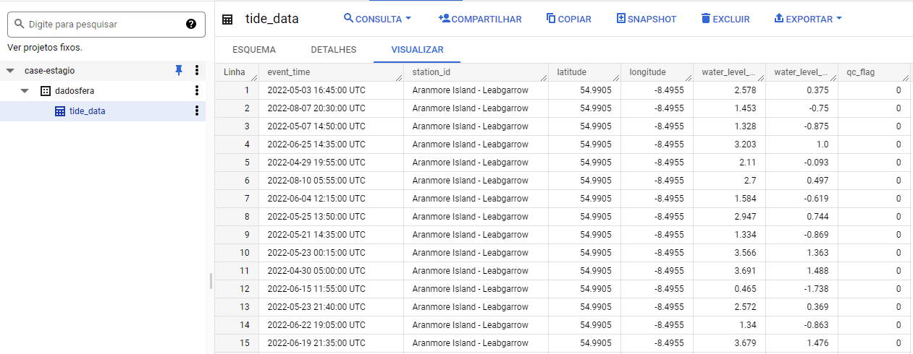

Code
import numpy as np
import pandas as pd
import seaborn as sns
import matplotlib.pyplot as plt
import csv
from scipy.stats.stats import pearsonrPrimeiro foi feito o download de todos os arquivos e eles foram salvos nas seguintes pastas
./resources/tides ./resources/waves
Em seguida, foram unidos todos os arquivos em 1 só, para facilitar o carregamento e a utilização, utilizando o código a seguir:
awk '(NR == 1) || (FNR > 1)' ./resources/Tides/*.csv > ./resources/files/final/tide_data.csvFeito importamos o dado para uma tabela do BigQuery
gsutil cp ./resources/files/final/tide_data.csv gs://case-estagio/dadosfera/Depois importamos para uma tabela no BigQuery
bq load --source_format=CSV --skip_leading_rows=1 --replace=true dadosfera.tide_data gs://case-estagio/dadosfera/tide_data.csvApós os dados carregados, iremos utilizar as tabelas para realização das consultas SQL, como mostrado na imagem abaixo:  Tide table

Waves table
As queries abaixo foram utilizadas para responder as questões 1 e 2
WITH min_temperature_per_station AS (
SELECT
MIN(sea_temperature) AS min_temperature,
station_id
FROM `case-estagio.dadosfera.waves_data`
GROUP BY station_id
)
SELECT
wave_data.station_id,
min_temperature AS lowest_temperature,
EXTRACT(MONTH from event_time) AS occur_month
FROM min_temperature_per_station
JOIN `case-estagio.dadosfera.waves_data` AS wave_data
ON wave_data.sea_temperature = min_temperature_per_station.min_temperature
AND wave_data.station_id = min_temperature_per_station.station_id
GROUP BY station_id, lowest_temperature, occur_monthQuery 1- Max Water Level
WITH max_watter_level AS (
SELECT
MAX(water_level_lat) AS max_watter_level
FROM `case-estagio.dadosfera.tide_data`
WHERE IS_NAN(water_level_lat) = false /* Alguns registros não possuiam o valor, por isso removemos os Not a Number (NaN)*/
)
SELECT
latitude,
longitude,
max_watter_level AS watter_level,
EXTRACT(MONTH from event_time) AS occur_month
FROM max_watter_level
JOIN `case-estagio.dadosfera.tide_data` AS tides_data
ON tides_data.water_level_lat = max_watter_level.max_watter_level
O maior nível de água acontece na latitude = 53.585 e longitude = -6.1081 no mês de Fevereiro.

A menor temperatura para cada uma das regiões é mostrada na imagem acima, e todas elas são no mês de Agosto.
Finalizando os quesitos básicos, faremos a análise de correlação entre a altura das ondas e temperatura do mar.
Existem duas possibilidades para analisar a correlação entre duas variáveis: o teste de Spearman, usado para variáveia discretas e o teste de Pearson usado para variáveis contínuas.
Os dados utilizado para a análise são contínuos, portanto o teste de Pearson é o ideal para indicar como a altura das ondas e a temperatura do mar estão relacionadas.
Como muitos valores são NaN, faremos a análise apenas para a estação AMETS Berth A Wave Buoy, que contém um conjunto de dados robusto e completo para o cálculo, como mostrado no notebook abaixo.
Neste arquivo faremos a análise de correlação entre a altura das ondas e a temperatura do oceano.
Importaremos todas as bibliotecas necessárias:
import numpy as np
import pandas as pd
import seaborn as sns
import matplotlib.pyplot as plt
import csv
from scipy.stats.stats import pearsonrFaremos a leitura do arquivo CSV:
df = pd.read_csv('C:\\Users\\sanny\\Documents\\dev\\ps\\dadosfera_case\\notebooks\\all_waves_data.csv',
warn_bad_lines=True,
error_bad_lines=False,
encoding= 'UTF-16')
df.head()
| longitude | latitude | time | station_id | PeakPeriod | PeakDirection | UpcrossPeriod | SignificantWaveHeight | Hmax | SeaTemperature | MeanCurSpeed | MeanCurDirTo | |
|---|---|---|---|---|---|---|---|---|---|---|---|---|
| 0 | -10.29737 | 54.2753 | 2022-08-11T17:35:00Z | AMETS Berth A Wave Buoy | 10.0 | 285.5 | 7.018 | 176.0 | NaN | 16.95 | NaN | NaN |
| 1 | -10.29737 | 54.2753 | 2022-08-11T18:05:00Z | AMETS Berth A Wave Buoy | 10.0 | 282.7 | 6.452 | 144.0 | NaN | 16.95 | NaN | NaN |
| 2 | -10.29737 | 54.2753 | 2022-08-11T18:35:00Z | AMETS Berth A Wave Buoy | 10.0 | 277.0 | 6.897 | 161.0 | NaN | 16.85 | NaN | NaN |
| 3 | -10.29737 | 54.2753 | 2022-08-11T19:05:00Z | AMETS Berth A Wave Buoy | 10.0 | 285.5 | 7.018 | 170.0 | NaN | 16.85 | NaN | NaN |
| 4 | -10.29737 | 54.2753 | 2022-08-11T19:35:00Z | AMETS Berth A Wave Buoy | 10.0 | 288.3 | 6.780 | 157.0 | NaN | 16.80 | NaN | NaN |
Precisamos procurar por valores nulos para que a correlação não tenha um valor enviesado.
df.shape(634, 12)
height_temperature = df[['station_id','SignificantWaveHeight', 'SeaTemperature']]
height_temperature.head(5)| station_id | SignificantWaveHeight | SeaTemperature | |
|---|---|---|---|
| 0 | AMETS Berth A Wave Buoy | 176.0 | 16.95 |
| 1 | AMETS Berth A Wave Buoy | 144.0 | 16.95 |
| 2 | AMETS Berth A Wave Buoy | 161.0 | 16.85 |
| 3 | AMETS Berth A Wave Buoy | 170.0 | 16.85 |
| 4 | AMETS Berth A Wave Buoy | 157.0 | 16.80 |
height_temperature.SignificantWaveHeight.isna().sum()479Como de 634 medições 479 são valores nulos, vamos procurar um padrão onde os valores nulos são encontrados.
filtred_AMETS = height_temperature.query('station_id == "AMETS Berth A Wave Buoy" ')
filtred_AMETS.SignificantWaveHeight.isna().sum()0filtred_BantryBay = height_temperature.query('station_id == "Bantry Bay" ')
filtred_BantryBay.SignificantWaveHeight.isna().sum()239Filtred_SmartWave = height_temperature.query('station_id == "SmartBay Wave Buoy" ')
Filtred_SmartWave.SignificantWaveHeight.isna().sum()240Agora vamos trabalhar apenas com a estação AMETS, devido ao N amostral ser mais robusto e completo.
sns.pairplot(filtred_AMETS)<seaborn.axisgrid.PairGrid at 0x1f389e69a00>Vamos separar as variaveis para calcular o Coeficiente de Pearson:
SignificantWaveHeight = filtred_AMETS['SignificantWaveHeight']
SeaTemperature = filtred_AMETS['SeaTemperature']pearson_coeficient, p_value = pearsonr(SignificantWaveHeight, SeaTemperature)
print('Coeficiente de Pearson {:0.3}'. format(pearson_coeficient))Coeficiente de Pearson 0.741Para plotar o gráfico :
AMETS = filtred_AMETS[['SignificantWaveHeight', 'SeaTemperature']]
correlation = AMETS.corr()
correlation| SignificantWaveHeight | SeaTemperature | |
|---|---|---|
| SignificantWaveHeight | 1.000000 | 0.741456 |
| SeaTemperature | 0.741456 | 1.000000 |
sns.heatmap(correlation, xticklabels = correlation.columns.values, yticklabels = correlation.columns.values)<AxesSubplot:>O Coeficiente de Pearson tem valor de 0.741 demonstrando uma forte correlação positiva entre a altura das ondas e a temperatura do mar. Dessa forma, quanto maior a temperatura do mar, maior será a altura das ondas.